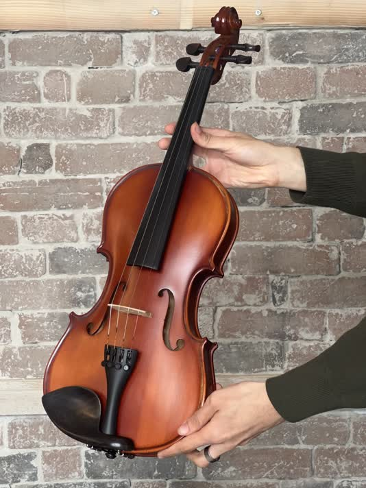

[En cours de construction] Découvrez notre sélection de violons, d'harmonicas, de flûtes traversières, et bien plus encore ! N'oubliez pas que le mieux est de venir en magasin pour essayer directement 😉
Retour aux instruments
×

Luthes - Le Débutant (violon 4/4)
Violon
🪴 Essentiel
Luthes - Le Débutant (violon 4/4)
Envie de découvrir le violon à petit prix ? Le v91g est un violon destiné aux débutants : épicea et érable massifs pour un son propre, étui et archets fournis, tout juste ce qu'il faut pour commencer sans prise de tête !
C'est dans son nom : la MiniFuse 2 est une mini interface audio capable d'accueillir deux entrées simultanées. C'est le genre de must-have pour tout home studio afin d'enregistrer toutes les idées créatives qui passent par des micros et/ou des instruments électriques, et d'écouter la tambouille musicale grâce à la sortie Main Stereo ou la sortie casque. Sans évoquer l'entrée/sortie MIDI et le hub USB, Arturia offre également plein de software, histoire d'agrandir la palette sonore et les outils à disposition !
2 entrées combo XLR/Jack 6,35 mm avec alimentation fantôme +48V
2 sorties Jack TRS 6,35 mm avec contrôle de volume
1 sortie casque stéréo avec contrôle de volume
1 canal stéréo virtuel pour loopback
1 entrée / 1 sortie fiche MIDI
1 hub USB
Alimentation via USB
Software inclus : Ableton Live Lite, Analog Lab Intro, 4 effets Arturia FX, Native Instruments Guitar Rig, 3 mois d'abonnement d'AutoTune Unlimited et de Splice Creator Plan
Pour un son très cristallin et des aiguës très bien définies, les Alliance Cantiga sont une superbe option : le Fluorocarbone Alliance assure une brillance et un sustain qui saura se marier avec votre guitare classique !
Pour un son moderne, les New Cristal Classic sont les cordes recommandées par l'équipe : ici, polyvalence assurée, pratique pour ceux qui commencent ou ceux qui jouent un peu de tout !
Besoin d'un jeu de cordes au son équilibré et plus souple ? Les Pro Arte Nylon Core EJ45 sont spécialement adaptés pour les guitaristes débutants, tout comme pour les confirmés qui veulent de la souplesse avant tout.
D'Addario propose une sonorité équilibrée avec les EJ46 : ni trop chaud, ni trop froid, c'est une très bonne option pour ceux qui veulent un son le plus universel.
Brillance et légèreté : les Nanoweb 10-47 sont une très bonne option pour ceux qui veulent une sonorité précise dans les aigus, toucher fin, et revêtement pour prolonger la durée de vie des cordes.
Si vous cherchez un bon sustain et de la brillance, les Nanoweb 12-53 sont des cordes qui cochent ces cases là. Mieux encore, leur revêtement garantit une durée de vie des cordes prolongée !
De la légèreté sans trop sacrifier la polyvalence de jeu, les Hybrid Slinky 9-46 sont une très bonne option pour ceux qui aiment les sons aigus et des cordes suffisamment souples pour des bends et solos !
Pour ceux qui veulent la brillance d'Ernie Ball tout en gardant de la polyvalence dans leur jeu, les 10-46 sont les cordes recommandées, notamment pour les guitares avec des humbuckers !
Pour les joueurs de Metal qui veulent de la rigidité, les Skinny Top Heavy Bottom 10-52 sont typiquement adaptés pour un jeu puissant, davantage pertinent pour un jeu accompagnement/accords !
Souplesse en qualité premium : les Nanoweb 9-42 sont conçues pour les joueurs ayant besoin de fluidité maximale tout en ayant une sensation de son riche notamment dans les aigus !
Vous êtes joueur style tapping à fond la caisse ? Le jeu de cordes EXL120 9-42 est dans ce cas une option à privilégier sans hésiter : ici, on a clairement une souplesse assurée !
Les EXL125 9-46 sont les cordes recommandées pour les joueurs de Stratocaster & Telecaster qui cherchent de la polyvalence sur leur jeu : tantôt accords/rythmique, tantôt solos/mélodies. Ni trop souple, ni trop rigide, c'est l'entre-deux parfait, le tout avec une sonorité équilibrée.
Besoin d'un peu de rigidité sans trop d'exigence pour les doigts ? Le jeu de cordes EXL125 10-46 est la tension recommandée pour ceux qui veulent quelque chose d'un petit peu plus robuste, le tout en gardant une sonorité équilibrée.